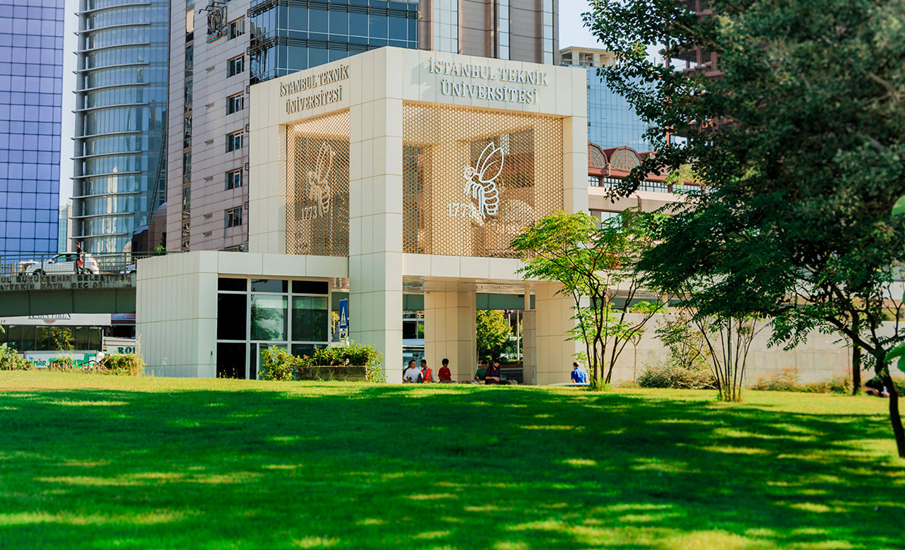

1995 yılının Eylül ayında Kahramanmaraş'ta doğdum. 2013'te İstanbul Teknik Üniversitesi Geomatik Mühendisliği Lisans programına
başladım. Halen İTÜ Zemin Mekaniği ve Geoteknik Mühendisliği Yüksek Lisans Programı'nda öğrenciyim.
İstanbul Teknik Üniversitesi Ayazağa Kampüsü Ana Girişi
